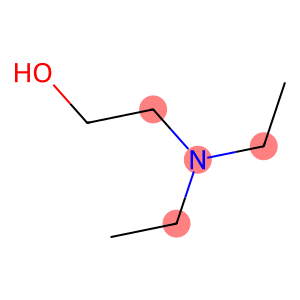
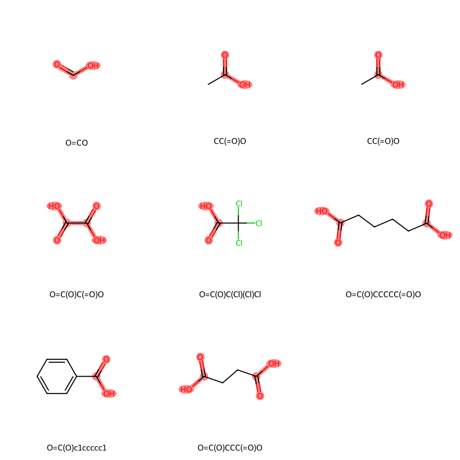

from rdkit import Chem
from rdkit.Chem import DrawSMARTS: The Regex of the Molecular World
Connecting Regex and SMARTS
Now, imagine applying a similar concept to the molecular world, where instead of letters and numbers, we work with atoms and bonds. This is where SMARTS (SMILES Arbitrary Target Specification) enters the picture.
Just as regex allows you to search through text for patterns like email addresses or phone numbers based on a defined rule, SMARTS enables you to search for molecular patterns. Here are some examples that draw parallels between regex and SMARTS:
- Regex:
\b[A-Za-z]+ol\bmatches words ending with “ol” (e.g., “ethanol” or “methanol”).- SMARTS Analogy:
[OH]looks for hydroxyl groups, a common feature in alcohols.
- SMARTS Analogy:
- Regex:
\b[A-Za-z]+ic acid\bfinds phrases like “acetic acid” or “benzoic acid”.- SMARTS Analogy:
C(=O)Omatches carboxylic acid functional groups.
- SMARTS Analogy:
- Regex:
benzene|benzo[a-z]+searches for “benzene” or words starting with “benzo”.- SMARTS Analogy:
c1ccccc1identifies the aromatic ring structure present in benzene and its derivatives.
- SMARTS Analogy:
As you can see, both tools use a pattern language for specifying what you’re looking for, whether in a text document or a chemical database.
| Symbol | Symbol name | Atomic property requirements | Default |
|---|---|---|---|
* |
wildcard | any atom | (no default) |
a |
aromatic | aromatic | (no default) |
A |
aliphatic | aliphatic | (no default) |
D<n> |
degree | <n> explicit connections |
exactly one |
H<n> |
total-H-count | <n> attached hydrogens |
exactly one |
h<n> |
implicit-H-count | <n> implicit hydrogens |
at least one |
R<n> |
ring membership | in <n> SSSR rings |
any ring atom |
r<n> |
ring size | in smallest SSSR ring of size <n> |
any ring atom |
v<n> |
valence | total bond order <n> |
exactly one |
X<n> |
connectivity | <n> total connections |
exactly one |
x<n> |
ring connectivity | <n> total ring connections |
at least one |
-<n> |
negative charge | -<n> charge |
-1 charge (-- is -2, etc) |
+<n> |
positive charge | +<n> formal charge |
+1 charge (++ is +2, etc) |
#n |
atomic number | atomic number <n> |
(no default) |
@ |
chirality | anticlockwise | anticlockwise, default class |
@@ |
chirality | clockwise | clockwise, default class |
@<c><n> |
chirality | chiral class <c> chirality <n> |
(no default) |
@<c><n>? |
chiral or unspec | chirality <c><n> or unspecified |
(no default) |
<n> |
atomic mass | explicit atomic mass | unspecified mass |
And here are some examples with SMARTS, description, and matching SMILES:
| SMARTS | Description | Matching SMILES |
|---|---|---|
[D3] |
Atom with 3 explicit bonds (excluding implicit hydrogens) | C(=O)OC, C#N |
[H3] |
Atom with 3 attached hydrogens | CC, CN |
[v3] |
Atom with bond orders totaling 3 (including implicit hydrogens) | N, C#N |
[r5] |
Atom in a 5-membered ring | c1cccc1, C1CCCC1 |
[R2] |
Atom in 2 SSSR rings | c1ccc2ccccc2c1 |
[+] |
Positively charged atom | [NH3+]C, [N+](=O)(O)C |
More information and complex examples can be found on Daylight SMARTS.
Getting Started with SMARTS in RDKit
First, ensure you have RDKit installed and import the necessary modules:
Now, let’s dive into some SMARTS examples using RDKit.
Sure, here are the examples with more detailed descriptions:
Example 1: Matching Simple Substructures
Suppose we want to find all molecules that contain an alcohol group (-OH). The SMARTS pattern for an alcohol group is [OH].
# Define a molecule and a SMARTS pattern
mol = Chem.MolFromSmiles('CCCO')
pattern = Chem.MolFromSmarts('[OH]')
# Use the HasSubstructMatch method to check if the pattern matches the molecule
matches = mol.HasSubstructMatch(pattern)
print("Contains alcohol group:", matches)Contains alcohol group: TrueThis will print True because the molecule CCCO (propanol) contains an alcohol group. The SMARTS pattern [OH] matches any oxygen atom attached to a hydrogen atom, which is the definition of an alcohol group.
Example 2: Aromatic Rings
To match any aromatic ring, we use the SMARTS pattern c1ccccc1. This looks for a six-membered carbon ring where each carbon is aromatic (c).
benzoic_acid = Chem.MolFromSmiles('O=C(O)c1ccccc1')
pattern = Chem.MolFromSmarts('c1ccccc1')
matches = benzoic_acid.HasSubstructMatch(pattern)
print("Contains benzene ring:", matches)Contains benzene ring: TrueThis will print True because the molecule O=C(O)c1ccccc1 (benzoic acid) contains a benzene ring. The SMARTS pattern c1ccccc1 specifies a ring of six aromatic carbon atoms, which is the definition of a benzene ring.
Example 3: Specifying Atom Counts
You can specify the number of specific atoms. For instance, to find structures with exactly two nitrogen atoms, you’d use [N][N].
molecule = Chem.MolFromSmiles('NCCN')
pattern = Chem.MolFromSmarts('[N].[N]')
matches = molecule.HasSubstructMatch(pattern)
print("Contains two nitrogens:", matches)Contains two nitrogens: TrueThis will print True because the molecule NCCN contains two nitrogen atoms. The SMARTS pattern [N][N] matches any structure that contains two nitrogen atoms, regardless of their position or connectivity.
Example 4: Using Logic Operators
SMARTS allows the use of logical operators to create more complex queries. For example, to find molecules containing oxygen or sulfur, use the pattern [O,S].
for smiles in ['OCCS', 'CCS', 'OCC', 'CC']:
mol = Chem.MolFromSmiles(smiles)
pattern = Chem.MolFromSmarts('[O,S]')
matches = mol.HasSubstructMatch(pattern)
print(f"{smiles} ontains oxygen or sulfur: {matches}")OCCS ontains oxygen or sulfur: True
CCS ontains oxygen or sulfur: True
OCC ontains oxygen or sulfur: True
CC ontains oxygen or sulfur: FalseThis will print True because the molecule OCCS contains both oxygen and sulfur atoms. The SMARTS pattern [O,S] matches any atom that is either oxygen or sulfur, using the logical OR operator ,.
Example 5: Ring Sizes and Aromaticity
To find molecules with an aromatic ring of exactly six members, the SMARTS a1aaaaa1 can be used.
mol = Chem.MolFromSmiles('c1ccccn1')
pattern = Chem.MolFromSmarts('a1aaaaa1')
matches = mol.HasSubstructMatch(pattern)
print("Contains an aromatic ring of six members:", matches)Contains an aromatic ring of six members: TrueThis will print True because the molecule c1ccccn1 contains an aromatic ring of six members. The SMARTS pattern a1aaaaa1 specifies a ring of six aromatic atoms (a), where the 1 and 1 indicate that the ring is closed.
Visualizing Matches
RDKit offers tools to visualize the matches. Here’s how you can highlight the parts of the molecule that match a given SMARTS pattern.
mol = Chem.MolFromSmiles('CCN(CC)CCO')
pattern = Chem.MolFromSmarts('[N](C)C')
# Get the atoms that match the pattern
matches = mol.GetSubstructMatches(pattern)
print(matches)
# Highlight the matching substructures
Draw.MolToImage(mol, highlightAtoms=[atom for match in matches for atom in match])((2, 1, 3), (2, 1, 5), (2, 3, 5))
Or for a list of molecules with MolsToGridImage.
from rdkit import Chem
from rdkit.Chem import Draw
# Define a list of carboxylic acids
smiles = [
'O=CO', # Formic acid
'CC(O)=O', # Acetic acid
'CC(=O)O', # Propionic acid
'C(=O)(C(=O)O)O', # Oxalic acid
'C(=O)(C(Cl)(Cl)Cl)O', # Trichloroacetic acid
'C(CCC(=O)O)CC(=O)O', # Adipic acid
'OC(=O)c1ccccc1', # Benzoic acid
'C(CC(=O)O)C(=O)O' # Succinic acid
]
# Convert SMILES to RDKit molecules
mols = [Chem.MolFromSmiles(smi) for smi in smiles]
# Highlight carboxylic acid groups
pattern = Chem.MolFromSmarts('C(=O)O')
# Get the atoms that match the pattern for each molecule
matches = [mol.GetSubstructMatches(pattern) for mol in mols]
# Highlight the matching substructures
highlighted_atoms = [[atom for match in mol_match for atom in match] for mol_match in matches]
# Generate a grid image with the highlighted molecules
Draw.MolsToGridImage(
mols,
highlightAtomLists=highlighted_atoms,
molsPerRow=3,
subImgSize=(300, 300),
legends=[Chem.MolToSmiles(mol) for mol in mols]
)
By understanding and utilizing SMARTS with RDKit, you unlock a powerful tool for molecular pattern matching and querying. Experiment with different SMARTS patterns to get comfortable with their syntax and capabilities.